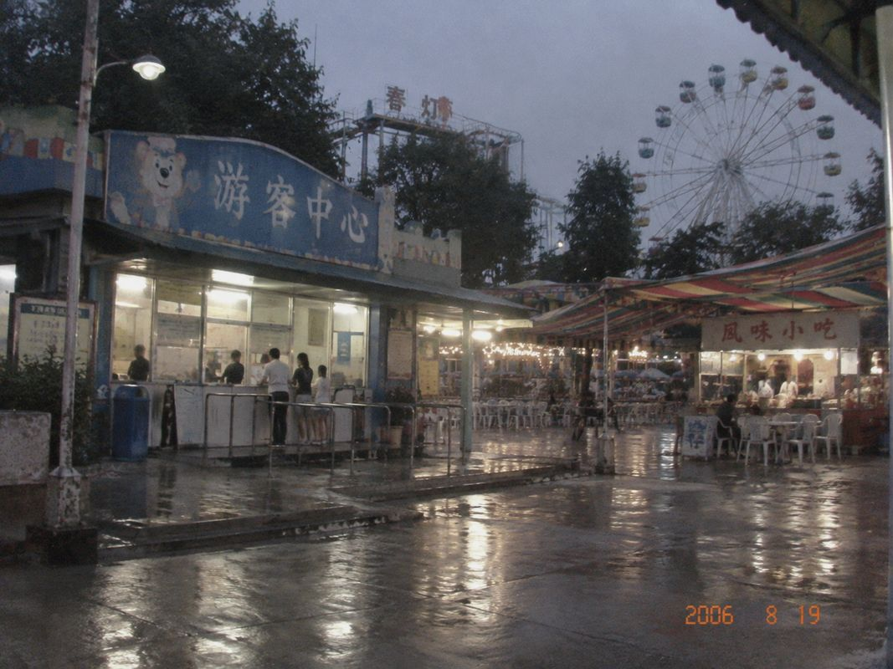

2006暑期活动时间表
以下时间为暑期平日安排。周末人多时，互动活动可能延后十到十五分钟；遇雨直接取消，不另补场。
| 时间 | 活动 | 地点 | 说明 |
|---|---|---|---|
| 10:30 | 灯灯熊见面 | 中心广场 | 约20分钟，可自带相机 |
| 11:20 | 儿童盖章台 | 游客中心门口 | 园区图背面集章，不算兑奖券 |
| 14:00 | 水枪小游戏 | 儿童区 | 衣服可能会湿 |
| 16:30 | 碰碰车亲子场 | B区 | 儿童须由成人陪同 |
| 17:10 | 灯灯熊拍照 | 中心广场西侧 | 工作人员只负责维持排队 |
| 18:30 | 夜场亮灯 | 中心广场 | 雨天可能提前 |
| 19:00 | 六章换贴纸 | 游客中心 | 贴纸每日限量 |

游客中心西侧。下午下雨时这里通常是最挤的地方。
工作人员小提示
灯灯熊头套视线比较窄，合照时不要从背后突然拉人。盖章台的印泥很难洗，家长不要让孩子自己拿。中心广场红棚晚上七点以后只卖冷饮和烤肠，不再做炒饭。